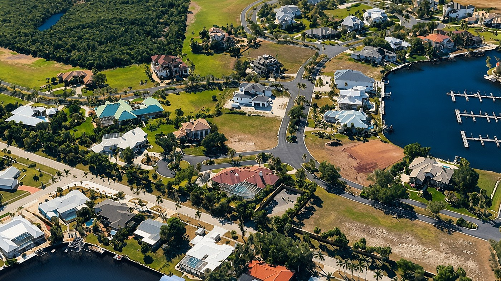

Draft preview for review. Not published. Rewrite Existing Page for /explore/port-charlotte/grassy-point/. Goes live 2026-12-06. Images shown from local copies. Rollout batch
Grassy Point, Port Charlotte: Gated Estate Lots and a Private Marina on Charlotte Harbor

Explore · Port Charlotte · Grassy Point
Grassy Point is a gated enclave of about 85 estate lots on Charlotte Harbor, with its own 72-slip marina and some of the largest homes in Port Charlotte.
Most homes here were built from the 1990s on, on lots sized for big houses and pools. This page covers what the public record and the community itself say about Grassy Point, and what to check before you buy. For the wider area, see Explore Port Charlotte.
The short version
On the harbor. ZIP 33952, off Edgewater Drive, entrance on Cousley Drive.
Gated and deed restricted. 24/7 access control, per the community.
Private marina. 72 slips in a 6-acre basin with harbor access.
Estate homes. Median home about 4,230 square feet; 96% have a pool.
85
parcels
50
single-family homes
$1,295,000
median county just value
72
marina slips
Source: Charlotte County Property Appraiser, parcel file and subdivision list (downloaded Nov 20, 2026); Grassy Point Yacht Club Estates, community website.
Location
Where Grassy Point is
On the harbor, minutes from downtown Punta Gorda.
Grassy Point sits on the north shore of Charlotte Harbor in Port Charlotte. From I-75, drivers take Harborview Road west, continue straight onto Edgewater Drive across U.S. 41, then turn left on Cousley Drive to reach the gate. Streets inside include Grassy Point Boulevard, Harborside Boulevard, Harbor Point Court, and Yacht Basin Court. The community notes that the Charlotte County Event Center, Gilchrist Park, and downtown Punta Gorda are about 8 to 10 minutes away.
Source: Grassy Point Yacht Club, directions page; Grassy Point Yacht Club Estates, community website.
Boating
The marina and the water
Private slips with harbor access.
The marina is the reason many owners choose Grassy Point. The community describes a private 72-slip marina in a 6-acre yacht basin, with average navigable basin depths of 6 to 9 feet at mean low water and entry by the Elkcam Channel at about 6 feet. From there, boats head straight into Charlotte Harbor. Ask how slips are assigned, owned, or leased, and what the marina costs each year, before you write an offer.
Source: Grassy Point Yacht Club Estates, community website.

Estate homes along Grassy Point Boulevard.
Homes
Grassy Point homes for sale
Large, newer homes on big lots.
The county roll lists 50 single-family homes and 29 vacant lots. Homes were built from 1992 to 2026, with a median build year of 2000. The median home has about 4,230 square feet of living area, and 96 percent have a private pool. About 52 percent carry the county's waterfront flag, which mostly marks lots on the harbor or the basin.
| Measure | Value |
|---|---|
| Parcels | 85 |
| Single-family homes | 50 |
| Vacant lots | 29 |
| Years built | 1992 to 2026 |
| Median county just value, homes | $1,295,000 |
| Middle half of just values | $1,026,000 to $1,535,000 |
| Qualified home sales, 2025 and 2026 | 5 |
County figures come from the Charlotte County Property Appraiser's public parcel file (downloaded November 20, 2026). Just value is the county's market value estimate on the latest certified roll, not an appraisal or a list price. Sale figures use each parcel's most recent recorded sale when that sale was qualified and dated 2025 or 2026.
Source: Charlotte County Property Appraiser, parcel file and subdivision list (downloaded Nov 20, 2026).
Before you buy
Four checks in Grassy Point
Start with the marina and the documents.
Grassy Point trades on a handful of sales a year, so each one needs careful homework.
Slip rights
Confirm whether a slip conveys, and what it costs.
Deed restrictions
Read the rules on building, docks, and rentals.
Flood and insurance
Harbor lots need a FEMA zone check and early quotes.
Seawall and lift
Inspect the seawall, dock, and any lift.
Our insurance guide and homestead exemption guide help with the costs after closing.
Source: FEMA Flood Map Service Center.
FAQs
Grassy Point: common questions
Where is Grassy Point in Port Charlotte?
Grassy Point is on the Charlotte Harbor shore of Port Charlotte, ZIP 33952, in the Edgewater Drive area. The gated entrance is on Cousley Drive, about three tenths of a mile from Edgewater Drive, per the community's directions page.
Is Grassy Point gated?
Yes. The community describes a private gated entrance with 24/7 access control. Visitors need an owner's pre-approval, and buyers touring a listed home must be escorted.
Does Grassy Point have a marina?
Yes. The community operates a private 72-slip marina in a 6-acre yacht basin directly off Charlotte Harbor. It lists average basin depths of 6 to 9 feet at mean low water, with entry by the Elkcam Channel at about 6 feet.
What do homes in Grassy Point cost?
The median county just value of a single-family home here is about $1,295,000, and the middle half runs from $1,026,000 to $1,535,000. The county recorded 5 qualified home sales in 2025 and 2026, too few to treat as a trend.
Are there lots left to build on?
Yes, a few. The county roll shows 29 vacant residential lots out of 85 parcels. Anyone building should read the deed restrictions and check the flood zone before buying a lot.
Looking at Grassy Point?
We can pull recent sales, slip details, and the flood zone for any home or lot here. Call or text The Helgemo Team at (941) 770-2275.
The office is at 320 Cross Street, Punta Gorda, Florida 33950. You can also meet Brian Helgemo or read more about the team.
Sources: Charlotte County Property Appraiser, parcel file and subdivision list (downloaded Nov 20, 2026); Grassy Point Yacht Club Estates, community website; Grassy Point Yacht Club, directions page; FEMA Flood Map Service Center. Checked November 20, 2026.